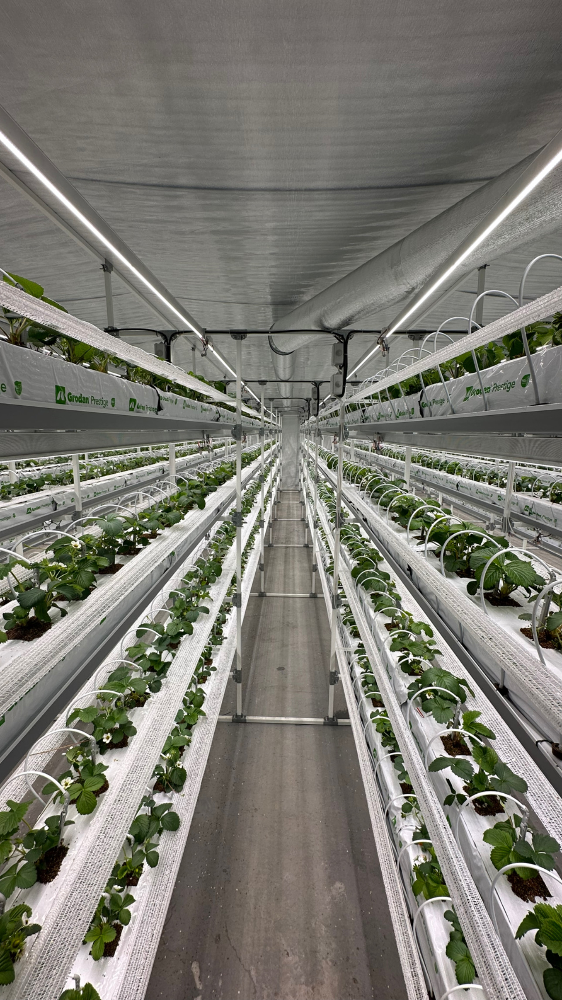

Главный маршрут
Запускаю ферму
Нужен быстрый ориентир: что входит в запуск, в каком порядке и с какой рамкой бюджета.
- Площадь, формат объекта и ограничения.
- Свет, полив, стеллажи и посадка в одной схеме.
- Понятный следующий шаг без хаоса.
Что получаете первым
Состав фермы, порядок запуска и понятный диапазон цифр.

Площадь и формат объекта
Очередность узлов
Рамка запуска